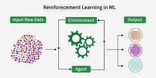

Reinforcement Algorithms

Reinforcement learning (RL) is used for problems where there isn’t one single correct answer, but some actions lead to better outcomes than
others. In RL, the model—called an agent—learns by interacting with its environment and receiving rewards or penalties based on its actions.
Instead of using labeled data, the agent improves through trial and error using a reward signal. The goal is to learn a policy, which is a
strategy for choosing the best action in a given situation. Some RL methods focus on learning the best policy directly, while others estimate
how valuable certain states or actions are before making decisions.
Q - Learning
Q-learning is a value-based reinforcement learning algorithm that learns the value of taking a certain action in a specific state. It uses a Q-table or function to estimate how good an action is based on the rewards the agent receives over time. By repeatedly updating these values, the agent learns which actions lead to the highest long-term rewards.
Proximal Policy Optimization (PPO)
Proximal Policy Optimization (PPO) is a policy-based reinforcement learning method designed to make stable and efficient updates to a model’s policy. It limits how much the policy can change during each training step, which helps prevent large, unstable updates. PPO is widely used in modern reinforcement learning systems, including reinforcement learning from human feedback (RLHF).
Actor-Critic/Advantage Actor-Critic
Actor-critic methods combine both policy-based and value-based approaches. The “actor” decides which action to take, while the “critic” evaluates how good that action was. Advantage Actor-Critic (A2C) improves this process by estimating how much better an action is compared to the average action. This helps the model learn more efficiently.
REINFORCE
REINFORCE is an early policy-based reinforcement learning algorithm that updates the policy based on the rewards received after taking actions. It increases the probability of actions that lead to higher rewards and decreases the probability of less successful actions. Although it can be simple to implement, it often has high variance and can be less stable than newer methods.